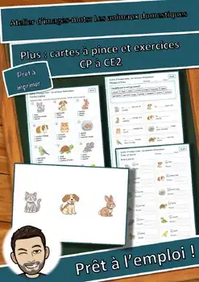
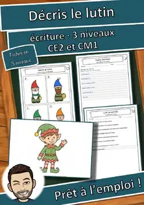
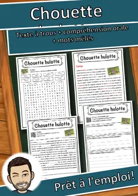
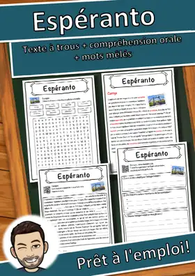
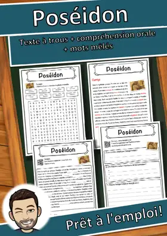
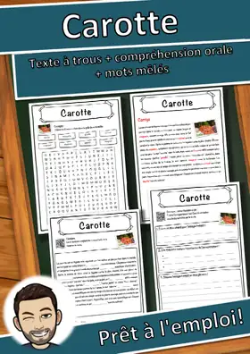
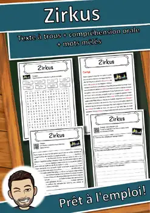
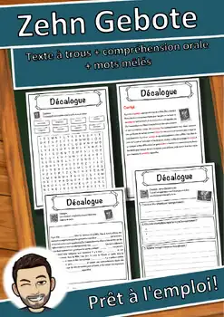
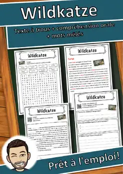
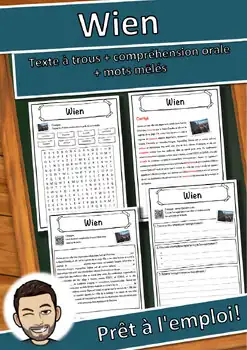

Fiches de lecture
Texte documentaire à trous avec banque de mots, compréhension orale par QR code (audio gratuit) et mots mêlés, avec corrigé.
3.284 ressources
Thème
Niveau
Par niveau: CE2 · 1e année · 4e année · 6e année

Atelier des personnages : Mozart – Fiche à lire et à compléter, CE2–CM1 (gratuit)

Atelier des personnages : Marie Curie – Fiche à lire et à compléter, CE2–CM1 (gratuit)

L'histoire de Noël en dominos : 2 versions, mots-clés (CE1-CM1) GRATUIT

Lutins de la gentillesse : 24 défis et mots secrets (CP-CM1) GRATUIT

Calendrier de l'Avent de la classe : 24 portes, idées (CP-CM1) GRATUIT

Énigmes logiques d'hiver : 6 défis, 3 niveaux (CE2-CM1) GRATUIT

Énigmes logiques de Noël : 6 défis, 3 niveaux (CE2-CM1) GRATUIT

Atelier d’images-mots: Les animaux domestiques – Jeu de mémoire (GRATUIT)

Atelier d’images-mots: Les animaux domestiques – Cartes images et mots (GRATUIT)

Atelier d’images-mots: Les émotions – Jeu de mémoire (GRATUIT)

Atelier d’images-mots: Les émotions – Cartes images et mots (GRATUIT)

Atelier d’images-mots: Les émotions – Plus : cartes à pince et exercices

Cartes de vacances Renard : mascotte de classe, 3 niveaux | Français

Panneaux de groupe Renard : mascotte de classe, cartes de rôle | Français

Döbel – Fiche de lecture : texte à trous, compréhension orale et mots mêlés

Cartes de vacances Hibou : mascotte de classe, 3 niveaux | Français

Panneaux de groupe Hibou : mascotte de classe, cartes de rôle | Français

Cartes de vacances Lion : mascotte de classe, 3 niveaux | Français

Panneaux de groupe Lion : mascotte de classe, cartes de rôle | Français

Atelier d’images-mots: Les animaux domestiques PLUS

Pack mascotte de classe Lion : texte, métiers, félicitations | Français

Pack mascotte de classe Renard : texte, métiers, félicitations | Français

Pack mascotte de classe Hibou : texte, métiers, félicitations | Français

Décris le lutin : écriture, banque de mots, liste de contrôle (CE2-CM1) GRATUIT

Chouette hulotte – Fiche CM1-CM2 : texte à trous, compréhension orale et mots mêlés
Manifestation – Fiche CM1-CM2 : texte à trous, compréhension orale et mots mêlés

Espéranto – Fiche CM1-CM2 : texte à trous, compréhension orale et mots mêlés
Strandkorb – Fiche CM1-CM2 : texte à trous, compréhension orale et mots mêlés

Poséidon – Fiche CM1-CM2 : texte à trous, compréhension orale et mots mêlés
Planétarium – Fiche CM1-CM2 : texte à trous, compréhension orale et mots mêlés
Lecture – Fiche CM1-CM2 : texte à trous, compréhension orale et mots mêlés

Carotte – Fiche CM1-CM2 : texte à trous, compréhension orale et mots mêlés

Chelles – Fiche de géographie : texte à trous, compréhension orale et mots mêlés

Beauvais – Fiche : texte à trous, compréhension orale et mots mêlés

Hyères – Fiche de géographie : texte à trous, compréhension orale et mots mêlés

Maisons-Alfort – Fiche : texte à trous, compréhension orale et mots mêlés

Énergie – Fiche de lecture : texte à trous, compréhension orale et mots mêlés

Émile et les Détectives – Fiche texte à trous et compréhension orale

Élisabeth de Wittelsbach – Fiche texte à trous et compréhension orale

École – Fiche de lecture : texte à trous, compréhension orale et mots mêlés
Zug (Kanton) – Fiche de lecture : texte à trous et compréhension orale

Zirkus – Fiche de lecture : texte à trous, compréhension orale et mots mêlés
Zeugen Jehovas – Fiche de lecture : texte à trous et compréhension orale
Zeitung – Fiche de lecture : texte à trous, compréhension orale et mots mêlés

Zehn Gebote – Fiche de lecture : texte à trous et compréhension orale
Xylophon – Fiche de lecture : texte à trous, compréhension orale et mots mêlés

Wildkatze – Fiche de lecture : texte à trous, compréhension orale et mots mêlés

Wien – Fiche de lecture : texte à trous, compréhension orale et mots mêlés
Aucune ressource trouvée – essaie un autre mot ou un autre filtre.